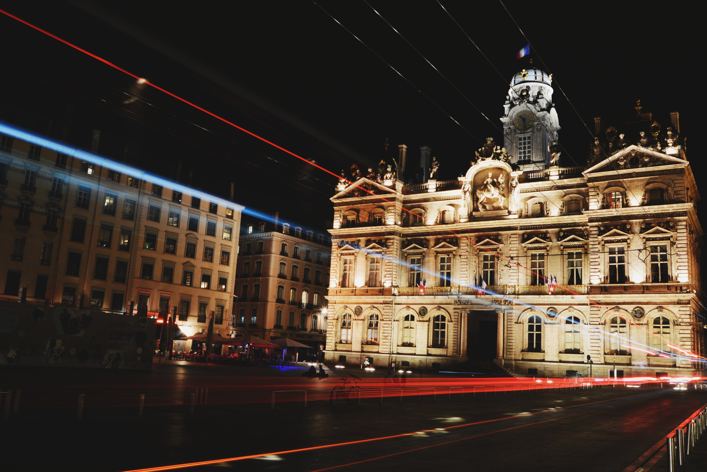

Bienvenue en France



Bienvenue en France
Les villes de la France
Plus ancienne ville de France, fondée sous le nom de Μασσαλία (Massalía) vers 600 av. J.-C. par des marins grecs originaires de Phocée, Marseille est depuis l'Antiquité un important port de commerce et de passage. L'ouverture de Marseille sur la mer Méditerranée en fait depuis ses origines une ville cosmopolite d'échanges culturels et économiques avec l'Europe du Sud, le Proche-Orient, l'Afrique du Nord et l'Asie. Elle est considérée comme la « Porte de l'Orient ».
Notre-Dame de la Garde, Vieux-Port de Marseille, Musée des civilisations de l'Europe
Toulouse est la quatrième commune la plus peuplée de France après Paris, Marseille et Lyon. Ville à l'architecture caractéristique des cités du Midi de la France6, Toulouse est surnommée la « ville rose » en raison de la couleur du matériau de construction traditionnel local, la brique de terre cuite. Toulouse est la capitale européenne de l'industrie aéronautique et spatiale avec les sites d'Airbus et de sa maison mère Airbus Group. Elle compte plus de 100 000 étudiants.
La place du capitole, Le Capitole de Toulouse, La Basilique Saint-Sernin
Plus ancienne ville de France, fondée sous le nom de Μασσαλία (Massalía) vers 600 av. J.-C. par des marins grecs originaires de Phocée, Marseille est depuis l'Antiquité un important port de commerce et de passage. L'ouverture de Marseille sur la mer Méditerranée en fait depuis ses origines une ville cosmopolite d'échanges culturels et économiques avec l'Europe du Sud, le Proche-Orient, l'Afrique du Nord et l'Asie. Elle est considérée comme la « Porte de l'Orient ».
Notre-Dame de la Garde, Vieux-Port de Marseille, Musée des civilisations de l'Europe
Arles est une commune en Provence-Alpes-Côte d'Azur. Cette ville, dont les habitants sont appelés Arlésiens, a en effet plus de 2 500 ans. Des monuments remarquables ont été construits pendant l’Antiquité à l’époque romaine, comme le théâtre antique, les arènes, les Alyscamps ou encore le cirque romain. En 2008, le plus vieux buste connu de Jules César a été découvert dans le Rhône.
Arènes d'Arles, Espace Van Gogh, Musée de la Camargue, Alyscamps
with a Quiz